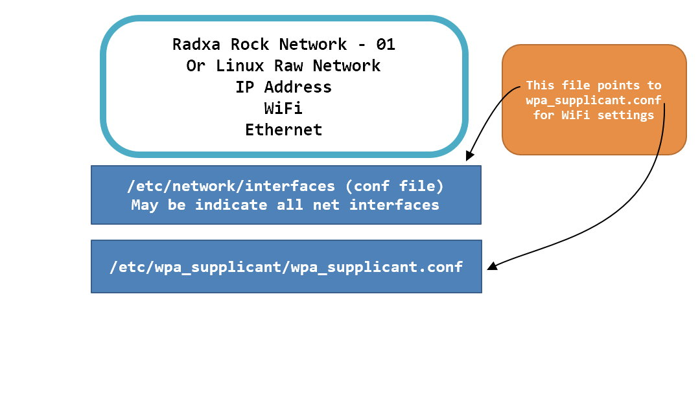

/etc/network/interfaces
# interfaces(5) file used by ifup(8) and ifdown(8)
auto lo
iface lo inet loopback
auto wlan0
iface wlan0 inet dhcp
wpa-conf /etc/wpa_supplicant/wpa_supplicant.conf
auto eth0
#iface eth0 inet dhcp
iface eth0 inet static
address 192.168.246.165
network 192.168.246.1
netmask 255.255.255.0
broadcast 192.168.246.255
gateway 192.168.246.1
auto eth1
iface eth1 inet dhcp
/etc/wpa_supplicant/wpa_supplicant.conf
ctrl_interface=/var/run/wpa_supplicant
ctrl_interface_group=0
update_config=1
network={
ssid="sanion"
psk="Sanionwifi12!@"
proto=WPA
key_mgmt=WPA-PSK
pairwise=TKIP
group=TKIP
id_str="PDA_WiFi"
}
After hours of trial following wpa_supplicant.conf is working is sanion office.
country=kr
ctrl_interface=/var/run/wpa_supplicant
ctrl_interface_group=0
update_config=1
network={
scan_ssid=1
ssid="sanion"
psk="Sanionwifi12!@"
#proto=WPA
#key_mgmt=WPA-PSK
#pairwise=TKIP
#group=TKIP
#id_str="PDA_WiFi"
}
Command to scan WiFi Access Points or Routers
sudo iwlist wlan0 scan
Under Linux, you can use the iw* series of commands to configure and display information about wireless networks:
iwconfig - configure a wireless network interface
iwlist - Get more detailed wireless information from a wireless interface
iwpriv - configure optionals (private) parameters of a wireless network interface
iw - show / manipulate wireless devices and their configuration
Here is a rather comprehensive list. One particularly nice way is:
watch -n 1 cat /proc/net/wireless
This command keep showing the file at 1 sec interval at stable screen.